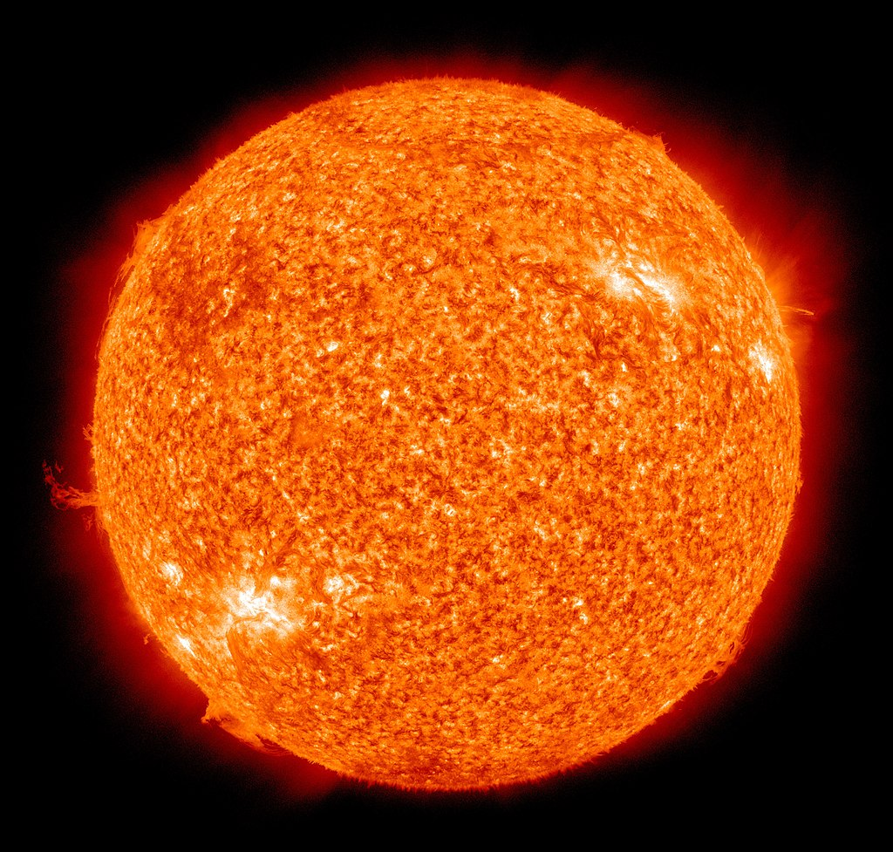
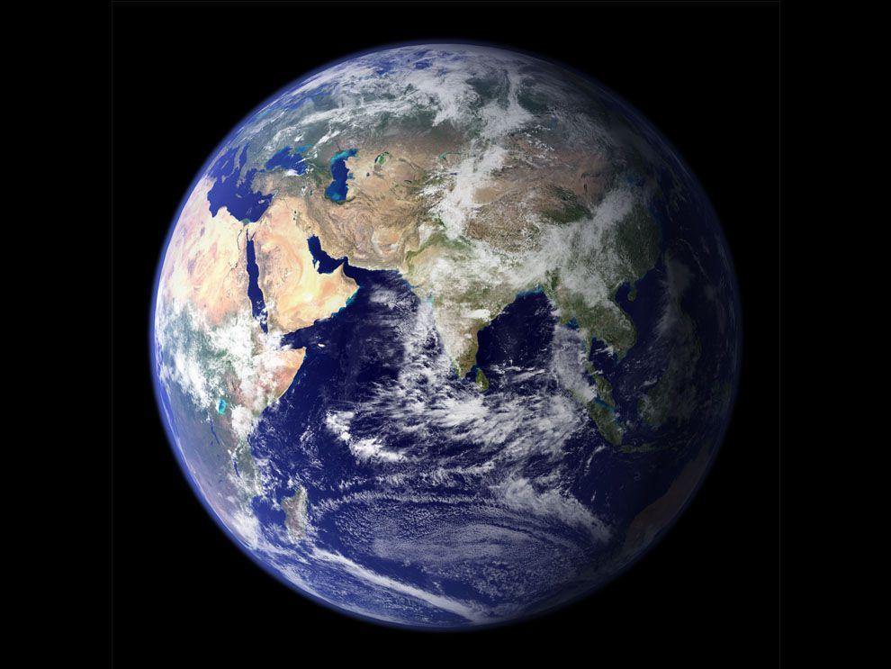
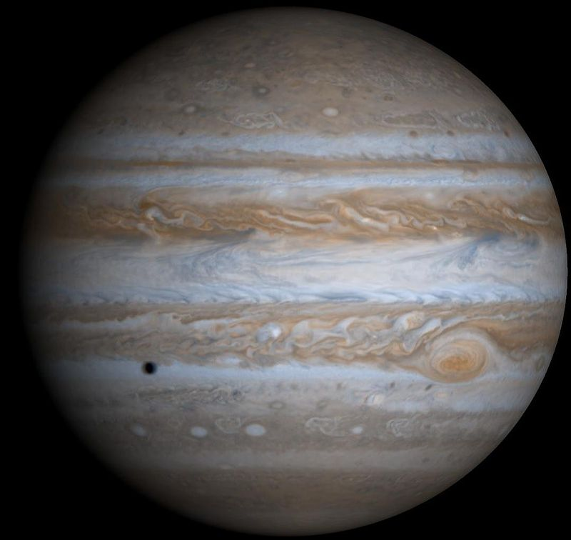

دائماً نسمع بالـ "المجموعة الشمسية". ماهي ؟ ولماذا سميت بهذا الاسم ؟ وعلى ماذا تحتوي ؟ |
|
:وتحتوي المجموعة الشمسية على |
|
هي النجم المركزي للمجموعة الشمسية. وهي تقريباً كروية وتحوي بلازما حارة متشابكة مع الحقل المغناطيسي
|  |
| هو أصغر كواكب المجموعة الشمسية وأقربها إلى الشمس , يظهر عطارد بشكل متألق عندما يراه الناظر من الأرض , يشبه عطارد قمر الأرض في شكله، إذ يحوي العديد من الفوهات الصدمية، ومناطق سهلية ناعمة، ولا يوجد له أقمار طبيعية أو غلاف جوي، ولكنه يملك نواة حديدية على عكس القمر مما يؤدي إلى توليد حقل مغناطيسي يساوي 1% من قيمة الحقل المغناطيس للأرض |
 |
| هو ثاني كواكب المجموعة الشمسية من حيث المسافة بينه وبين الشمس , يعتبر الزهرة كوكبًا عاصفًا ذو رياح شديدة ومرتفع الحرارة، وهو تقريبًا في مثل حجم الأرض، لهذا يطلق عليه أخت الأرض، حيث أن وزن الإنسان على سطحه سيكون تقريبًا مثل وزنه على الأرض ,على سطح الزُّهَرَة توجد جبال معدنية مغطاة بصقيع معدني من الرصاص تذوب وتتبخر في الارتفاعات الحرارية . |
 |
| هي ثالث كواكب المجموعة الشمسية بعدً عن الشمس بعد عطارد والزهرة , وتعتبر من أكبر الكواكب الأرضية وخامس أكبر الكواكب في النظام الشمسي وذلك من حيث قطرها وكتلتها وكثافتها، ويُطلق على هذا الكوكب أيضًا اسم العالم
|  |
| الكوكب الأحمر هو الكوكب الرابع من حيث البعد عن الشمس في النظام الشمسي وهو الجار الخارجي للأرض ويصنف كوكبا صخريا، من مجموعة الشبيهة بالأرض
|  |
| المشتري خامس الكواكب بعداً عن الشمس وأكبر كواكب المجموعة الشمسية, هو عملاق غازي وكتلته أقل بقليل من كتلة الشمس
|  |
| زحل هو الكوكب السادس من حيث البُعد عن الشمس وهو ثاني أكبر كوكب في النظام الشمسي بعد المشتري , تعدّ الظروف البيئية على سطح زحل ظروفاً متطرفة بسبب كتلته الكبيرة وقوة جاذبيته , يتميز زحل بتسع حلقات من الجليد والغبار تدور حوله في مستوى واحد مما يعطيه شكلاً مميزاً. | |
|
هو سابع الكواكب بعدًا عن الشمس، وثالث أضخم كواكب المجموعة الشمسية، والرابع من حيث الكتلة , كان أورانوس أول كوكب يتم اكتشافة من خلال التلسكوب , و يعتبر غلافه الجوي الأبرد في المجموعة الشمسية
|  |
|
يطلق عليه الكوكب الأزرق ثامن كواكب المجموعة الشمسية وأبعدها عن الشمس في نظامنا الشمسي وهو رابع أكبر كوكب نسبةً إلى قطره وثالث أكبر كوكب نسبةً إلى كتلته
|  |